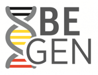

I conducted research in forensic science and criminology for the Nationaal Instituut Criminalistiek en Criminologie / Institut National de Criminalistique et de Criminologie (NICC-INCC, National Institute for Forensic Science and Criminology), in Brussels, Belgium.
To support and study the exploitation of forensic DNA data at the national or international levels, we launched three research projects: PIES (2012), Be-Gen (2014) and BE PRUM ADN (2015). Subsequent to the attacks that hit France (2015) and Belgium (2016), we initiated the FAR project (2017) to study the processes related to radicalization.
In Anderlecht, in the town where I lived, close to the city of Brussels, I have paid regular visits to the Erasmus house Museum, where I've developped an interest for the time period and the life of renowned humanist Erasmus. In the garden of this museum, I discovered this inspiring proverb Ubi bene ibi patria (literally: Where is the good, there is your home).